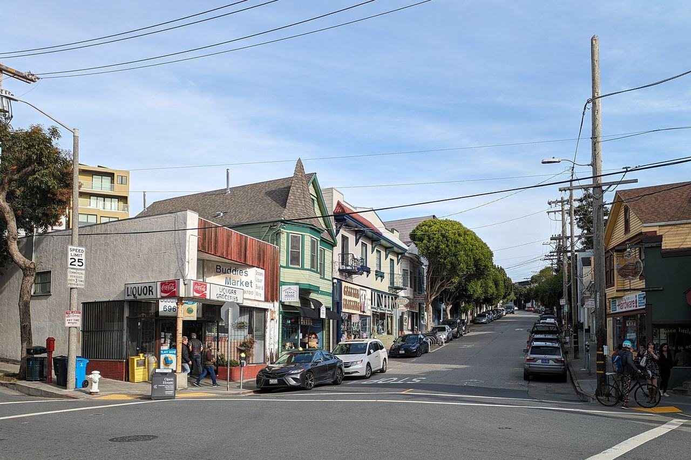

Glen Park
The valley around Glen Canyon, south of Diamond Heights and west of Bernal Heights, laid out on the southern reaches of the Rancho San Miguel and known as Little Switzerland while it was still dairy farms. Lots sold slowly until the 1906 earthquake sent refugees to the canyon, and the streets filled with cottages, flats and corner storefronts over the next thirty years. Most of the pages here come from the 2010 historic resources evaluation of the Glen Park Community Plan, which surveyed 110 parcels around the commercial core at Diamond and Chenery and evaluated eight of them in detail.

Map
Named buildings and landmarks
-
1
-
2
-
3
-
4
-
5
Streets documented so far
- 30th Street
1 building, built 1880. - Addison Street
1 building, built 1972. - Amber Drive
1 building, built 1900. - Arlington Street
1 building, built 1938. - Baden Street
1 building, built 1939. - Beacon Street
1 building, built 1963. - Bosworth Street
4 buildings, built 1910–1937. - Brompton Avenue
10 buildings, built 1908–1963. - Chenery Street
16 buildings, built 1900–1951; 5 in the Glen Park Center Historic District. - Congo Street
1 building, built 1917. - Detroit Street
1 building, built 1947. - Diamond Heights Boulevard
1 building, built 1964. - Diamond Street
5 buildings, built 1916–1951; 2 in the Glen Park Center Historic District. - Digby Street
1 building. - Elk Street
1 building. - Everson Street
1 building, built 1963. - Fairmount Street
1 building, built 1907. - Gold Mine Drive
1 building, built 1963. - Joost Avenue
2 buildings, built 1910–1926. - Laidley Street
1 building, built 1900. - Lippard Avenue
1 building. - Malta Drive
1 building, built 1974. - Miguel Street
1 building, built 1978. - Milton Street
2 buildings, built 1908–1925. - Monterey Boulevard
1 building, built 1900. - Portola Drive
1 building. - Randall Street
1 building, built 1903. - Sunview Drive
1 building, built 1957. - Sussex Street
4 buildings, built 1977. - Theresa Street
1 building, built 1924. - Turquoise Way
3 buildings, built 1962–1964; 3 in the Diamond Heights Historic District. - Whitney Street
1 building, built 1908. - Wilder Street
3 buildings, built 1938–1954.
Parks and public spaces
- Arlington Community Garden
Community garden, 5,663 sq ft. - Berkeley Way Open Space
Neighborhood park or playground, 36,155 sq ft. - Billy Goat Hill
Neighborhood park or playground, 3.7 acres. - Cayuga & Lamartine Mini Park
Mini park, 6,534 sq ft. - Crags Court Garden
Community garden, 19,166 sq ft. - Diamond & Farnum Open Space
Mini park, 3,485 sq ft. - Dorothy Erskine Park
Neighborhood park or playground, 1.6 acres. - Everson & Digby Lots
Neighborhood park or playground, 1.3 acres. - Fairmont Plaza
Neighborhood park or playground, 37,897 sq ft. - George Christopher Playground
Neighborhood park or playground, 7.0 acres. - Glen Canyon Park
Regional park, 70.7 acres. - Joost & Baden Mini Park
Mini park, 6,098 sq ft. - Miraloma Playground
Neighborhood park or playground, 2.4 acres. - O'Shaughnessy Hollow
Neighborhood park or playground, 11.0 acres. - Sunnyside Conservatory
Mini park, 10,890 sq ft. - Sunnyside Playground
Neighborhood park or playground, 2.6 acres. - Topaz Open Space
Neighborhood park or playground, 40,075 sq ft. - Walter Haas Playground
Neighborhood park or playground, 4.6 acres.
Historic districts here
Adjacent neighborhoods
Noe Valley is north over the ridge, Bernal Heights east across San Jose Avenue, and the Outer Mission south beyond the Interstate 280 interchange. West of Twin Peaks begins west of Glen Canyon.